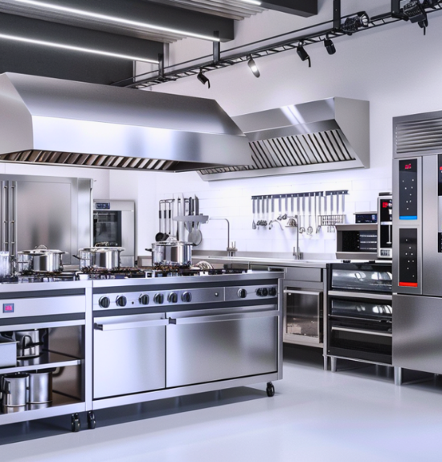
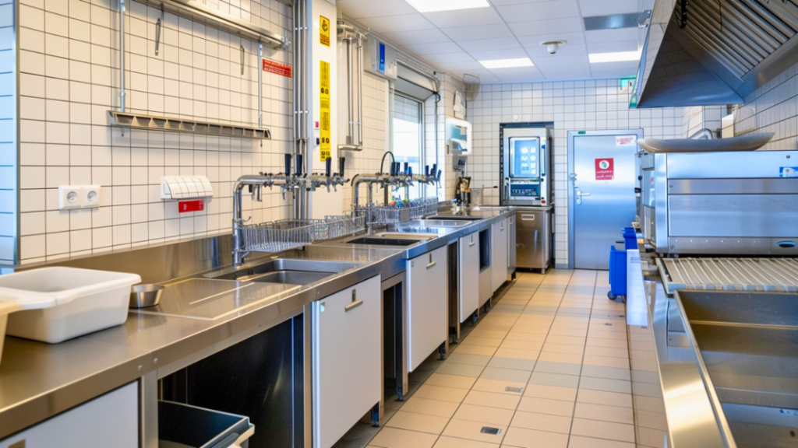
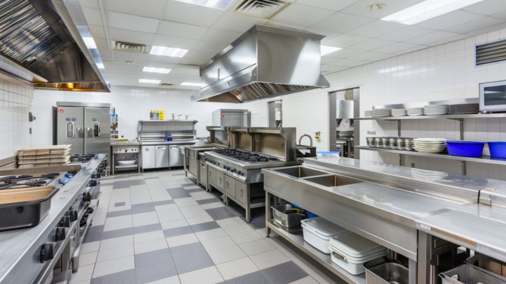
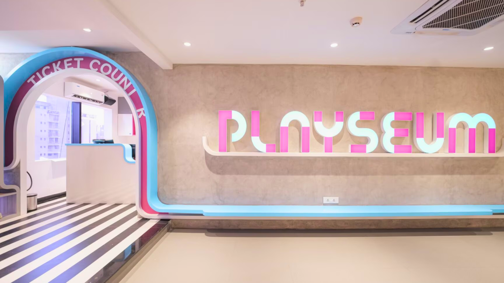
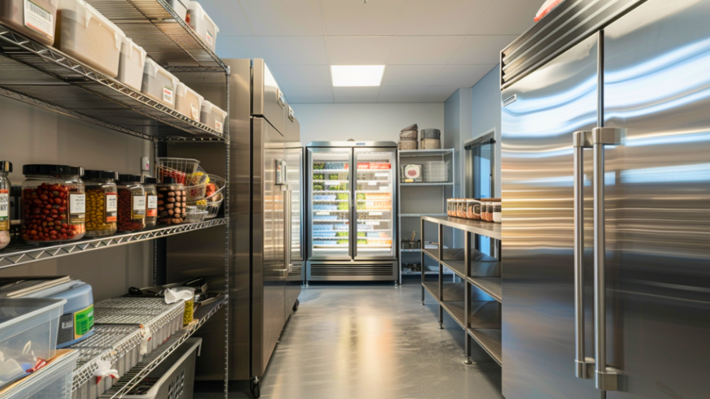

MSetting up a commercial kitchen is not just about buying a few burners and hoping for the best. Whether you’re opening a café, a QSR, or a fine-dining restaurant, having the right kitchen equipment is the backbone of consistent quality and efficient service.
In this guide, we break down the essential commercial kitchen equipment list, how to choose what you need, and the smart way to plan your setup, especially if you’re working with limited space or budget.
1. Start With the Menu and Format

Before you buy anything, get clear on what you’ll serve and how you’ll serve it.
Will your kitchen need to handle:
- Grills and fryers (for fast food)?
- Ovens and mixers (for bakeries)?
- High-volume prep stations (for buffets or cloud kitchens)?
Your restaurant kitchen setup should be aligned with your menu first. Equipment comes second.
2. The Essential Commercial Kitchen Equipment List
Here’s a basic checklist used across most F&B formats:
Cooking Equipment
- Gas ranges or induction cooktops
- Commercial ovens (convection or combi)
- Grills or griddles
- Deep fryers
- Tandoors or pizza ovens (if applicable)
Food Prep Equipment
- Vegetable choppers and slicers
- Commercial mixers or dough kneaders
- Blenders and food processors
- Prep tables with under-counter storage
Refrigeration and Storage
- Undercounter refrigerators
- Reach-in freezers
- Display chillers (for cafes/QSRs)
- Dry storage racks and shelving
Cleaning and Hygiene
- Commercial dishwasher or 3-sink system
- Handwash sinks with foot or sensor operation
- Grease traps
- Exhaust hood and ventilation system
Long-tail keyword focus: best equipment for small commercial kitchen setups often includes multipurpose items like a combi oven or refrigerated prep table.

3. Choose Energy-Efficient, Space-Smart Options
If you’re working with limited square footage, opt for:
- Compact combi ovens that bake, grill, and steam in one
- Stacked refrigeration for vertical storage
- Multipurpose prep stations with chilled drawers
Also, look for energy-efficient commercial kitchen equipment that helps reduce long-term operational costs.
4. Factor In Compliance and Safety

It’s not just about what fits in the space—it’s also about meeting health and fire norms.
Make sure your layout includes:
- Proper exhaust and ventilation systems
- Fire-rated kitchen walls and hood systems
- Drainage points, grease traps, and washable surfaces
An expert designer can help you plan your kitchen around both workflow and compliance.

5. Think Long-Term: Service and Scalability
Choose equipment from reliable brands with service networks in your city. And always ask:
- Can this be scaled across multiple outlets?
- What’s the AMC cost?
- Can the equipment handle peak-hour volumes?
Planning for long-term scalability and service support can save you from expensive downtimes later.
Final Word
Setting up a commercial kitchen is one of the most strategic decisions for any restaurant owner.
The right equipment doesn’t just cook food—it boosts efficiency, improves hygiene, and ensures consistency across every plate.
Looking for guidance on your commercial kitchen layout and equipment planning? At SprintCo, we help first-time and seasoned restaurateurs set up kitchens that work as smart as they look.